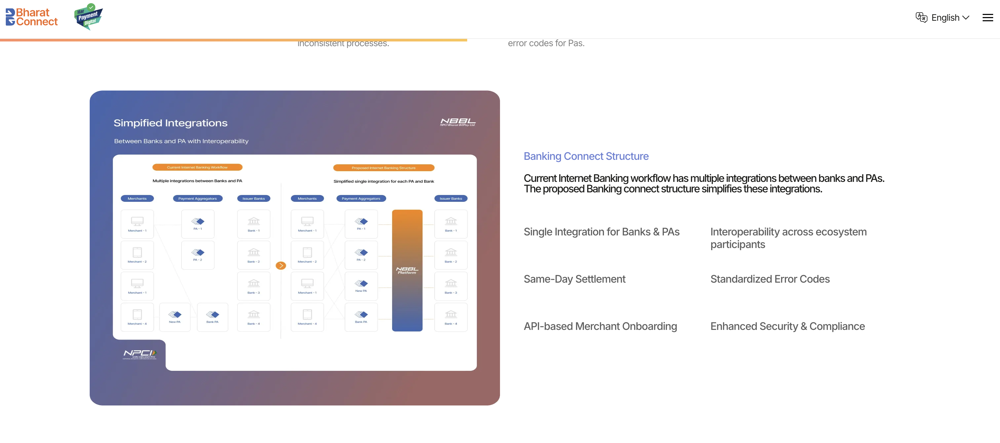
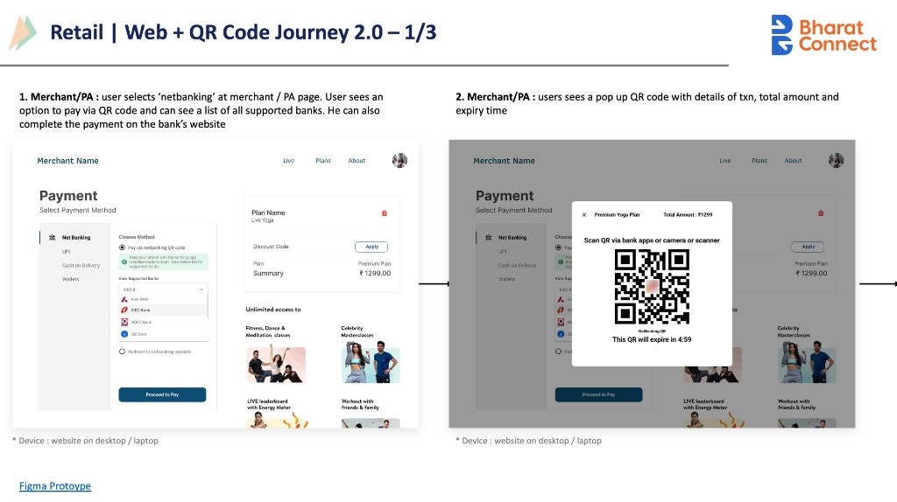
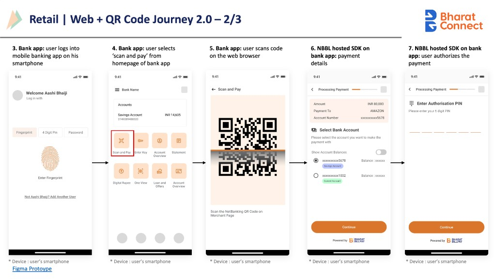

Reimagining a nation’s payment rail
for a billion people
I worked on NetBanking 2.0, a RBI-mandated initiative led by NPCI Bharat BillPay, to reimagine NetBanking as a modern, interoperable, and real-time payment system, designed to work seamlessly across merchants, payment aggregators, banks, and users. This was designed in collaboration with BCGX for NPCI, launched by the RBI Governor in 2025.
visit the live portal- 1B+ people the rail can serve
- 100+ banks on one standard
- 2025 launched by the RBI Governor
- 3 entry paths, one system

01 · The Challenge
NetBanking has remained slow, fragmented, and difficult to use despite powering critical high value payment volumes
Every bank runs its own maze : different logins, repeated data entry, desktop-era pages, separate integrations behind every checkout.
-

Login failures & errors
Every bank a different login maze; failures with no way back
-

Repeated data entry
Customers re-type details at every single step
-

Not built for mobile
Desktop-era pages on a mobile-first population
-

Complex integrations
100+ banks, each a separate custom integration
-

Slow merchant enablement
Months to onboard a merchant onto NetBanking
02 · Research
Three insights shaped everything after
-
Bank apps are perceived as the most secure environment
People trust their bank’s surface, not the gateway between
-
Users tolerate friction for trust, but not unpredictability
One failed payment outweighs ten smooth ones
-
Mobile is preferred, but only when authentication feels reliable
The next billion users will never see a desktop checkout
03 · Key decisions
Five calls that defined the rail
-
01
One rail, three entry paths
Redirect, QR and intent flows designed as one coherent system, so the same rail serves desktop, mobile web and app-to-app.

-
02
Authenticate where trust lives
Authentication moved into the customer’s own bank app, replacing unfamiliar gateway pages with a surface people already trust.

-
03
Design the failures first
Every failure state mapped and standardised before the happy path, because at national scale the edge case is the common case.

-
04
Standards, not screens
A configurable UX framework each bank adapts within guardrails: uniform where it matters, flexible where banks differentiate.

-
05
Governance as a design surface
Compliance checklists and review rituals designed so 100+ banks can certify against the standard without ambiguity.

04 · The journey
Scan, approve, done
-

Scan from any storefront
-

Approve inside the bank app
-

Confirmation on both surfaces
05 · What it changed
-
Customers
One familiar flow across every bank and mobile-first. No re-entry, no password, no OTP. Simple flow with a biometric login to your bank apps.
-
Merchants
A single integration replaces many custom ones. All banks on day zero. No gaps.
-
Banks & aggregators
A shared standard with room to differentiate on top. NB 2.0 taking netbanking at par with cards and UPI
* Details have been simplified for confidentiality